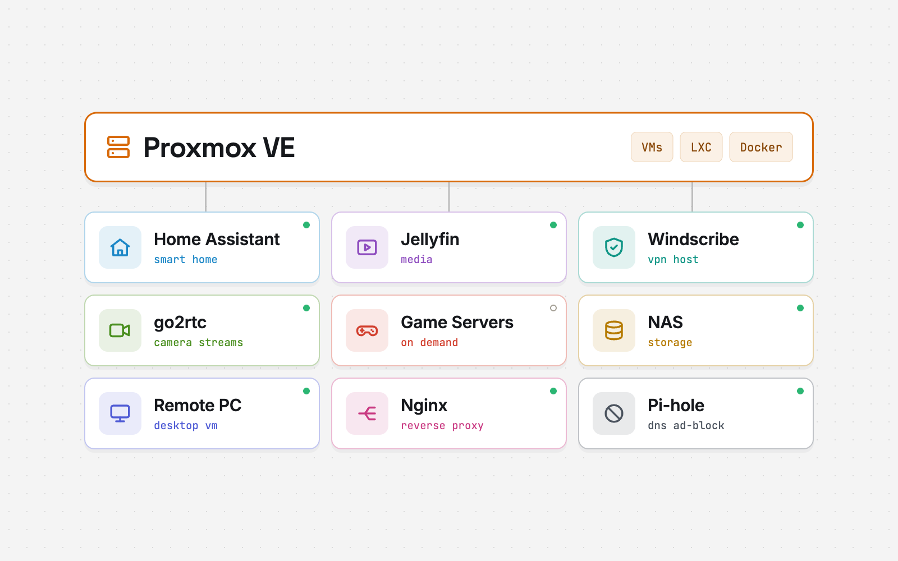
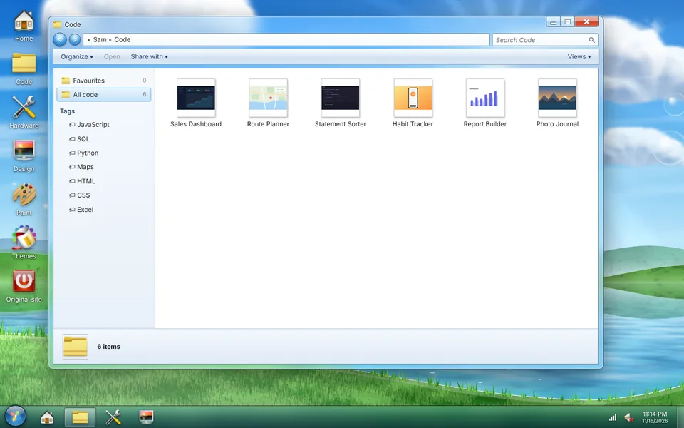

Pitwall
Sim race coaching hub with turn-by-turn analysis and feedback.
VIEW PROJECT →code / 03
A selection of my mostly open source software projects, including webpages, scripts, and applications I've built.
Sim race coaching hub with turn-by-turn analysis and feedback.
VIEW PROJECT →
Self-hosted Proxmox homelab constructed from old components, running smart home, media, vpn, storage, and game servers
VIEW PROJECT →
Theme engine for this site: eight themes that each rebuild every page from the same HTML, loaded only when someone picks one.
TRY IT →